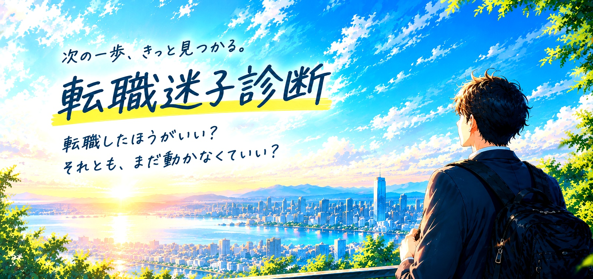
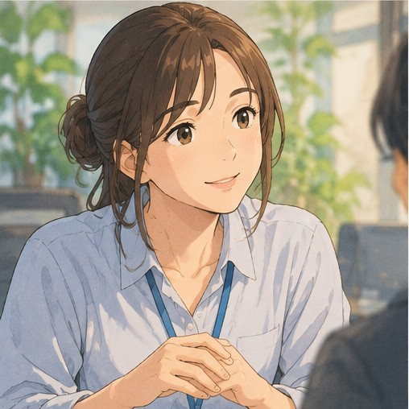
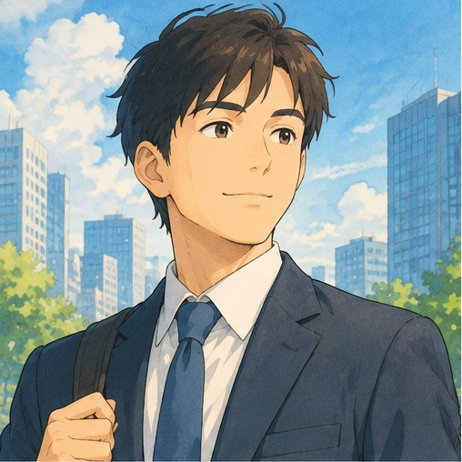

このまま
続けていいのかな…
続けていいのかな…



求人を「見る側」だけじゃない。
「作る側」も知っているから、違う角度で一緒に考えます。
「辞めるかどうか」をいきなり決めなくても大丈夫。まずは、今の気持ちと状況を整理してみませんか？


書き出し不要。タップだけで、今の気持ちや状態を整理します。
悩み方・動き方・強みの傾向から、今のあなたに近いタイプを見つけます。
「残る」「転職する」「情報収集する」など、選択肢を整理するきっかけにします。
タイプ名だけで終わらず、「今の状態」「隠れた強み」「整理したいこと」「次の一歩」まで見えるようにしています。
周りを優先して、自分の気持ちを後回しにしがち。
変えたい気持ちはある。でも、どこへ進むかがまだ決まらない。
動きたい。でも、失敗や面倒さがブレーキになりやすい。
自分の強みや、向いている環境がまだ言葉になっていない。
仕事内容より、今の職場や人間関係との相性が気になっている。
簡単には決めない。納得できる材料を集めてから動きたい。
「はい・どちらでもない・いいえ」から直感で選ぶだけ。
今の状態だけでなく、隠れた強みと整理ポイントまで確認。
必要なら、診断結果をもとに無料で一緒に整理できます。
転職するかどうかは、あとで決めればOK。
まずは10問、直感で答えてみてください。